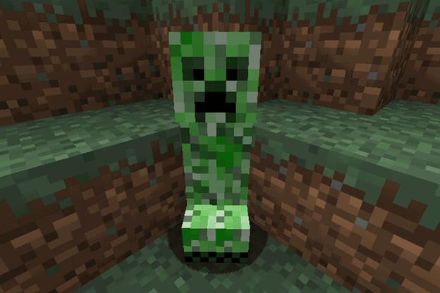
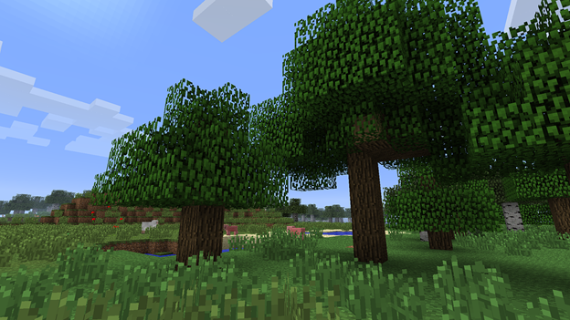

Unlock the Secrets of Minecraft: Proven Tips for Building, Crafting, and Exploring
Minecraft is a game that offers endless possibilities for exploration, building, and creativity. Whether you're a beginner or a seasoned player, there are always new tips and tricks to learn that can help you take your game to the next level. In this post, we'll share some proven tips for building, crafting, and exploring in Minecraft that will help you unlock the secrets of the game and become a true Minecraft master.
Mastering Building Techniques in Minecraft
Plan ahead: Before you start building, take some time to plan out your structure. This will help you avoid mistakes and make sure that your building looks as good as possible.
Use a grid: When building, use a grid to help you keep your structure aligned and symmetrical. This will make it easier to build and will result in a more polished final product.
Experiment with different materials: Minecraft offers a wide variety of building materials, each with their own strengths and weaknesses. Experiment with different materials to find the ones that work best for you.
Expert Strategies for Crafting in Minecraft
Keep your inventory organized: Crafting in Minecraft can be challenging, especially if your inventory is cluttered. Keep your inventory organized to make crafting easier and more efficient.
Learn the crafting recipes: The key to crafting in Minecraft is knowing the recipes. Take the time to learn the recipes for the items you want to craft and you'll be able to craft them more efficiently.
Crafting tables are an essential tool for players looking to create items in Minecraft. They allow you to access a larger crafting area, enabling you to create more complex items and recipes. Before starting any crafting project, make sure you have a crafting table in your inventory. By utilizing a crafting table, you'll be able to streamline your crafting process and increase your efficiency, leading to more successful and fulfilling crafting experiences in the world of Minecraft.

Tips on Exploring in Minecraft
Exploration in Minecraft can be challenging, especially if you don't know where you've been. Craft a map to help you keep track of where you've been and where you still need to explore.
Building a shelter is essential for survival in Minecraft. Make sure you have a shelter before you start exploring. Good shelter should have a door and windows, chest and crafting table. A bed can help you return back from trips over the Minecraft lands.

Conclusion
With these proven tips for building, crafting, and exploring in Minecraft, you'll be well on your way to unlocking the secrets of the game and becoming a true Minecraft master. Happy crafting!
How to Buy Minecraft Game
Owning Minecraft is a dream come true for many players. The game's immense popularity and versatility across platforms make it a must-have for gamers.
Make your turn to obtain the game!
You can acquire Minecraft from the following sources:
- Android: https://play.google.com/store/apps/details?id=com.mojang.minecraftpe&hl=en&gl=US (approximately $7.49)
- iOS: https://apps.apple.com/us/app/minecraft/id479516143 (approximately $6.99)
- PC: https://www.minecraft.net/en-us (price varying $5 to $10)
DISCLAIMER
IT IS NOT AN OFFICIAL MINECRAFT PRODUCT. NOT APPROVED BY OR ASSOCIATED WITH MOJANG.
The Minecraft name, the Minecraft brand, and Minecraft is the property of Mojang AB or a respected owner.
With respect to Mojang Brand Guidelines